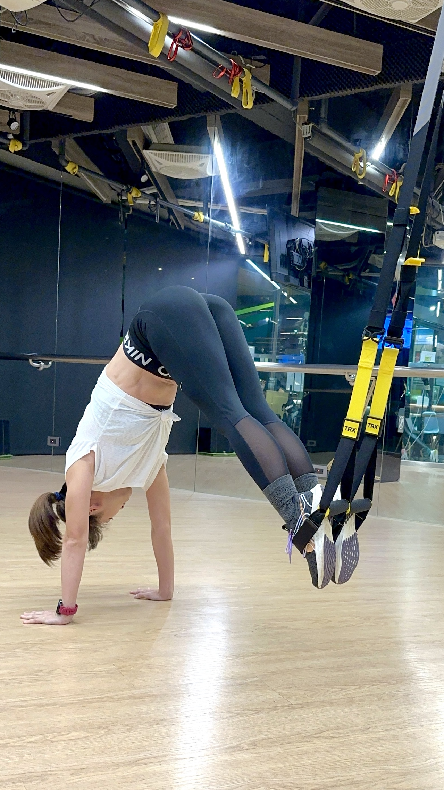

01 / STRENGTH & STABILITY
TRX 肌力
跟著音樂節奏，運用 TRX 懸吊繩與自身重量進行全身肌力訓練。課程將推、拉、蹲等基本動作搭配音樂編排，讓肌力練習也能跟著節奏一起律動。
在動作過程中，練習穩住核心、控制身體的位置，感受上下肢如何協調出力。除了完成動作，也更清楚知道自己正在使用哪裡的力量。
透過身體傾斜角度與姿勢的調整，選擇適合自己的訓練強度，在跟上節奏的同時，保有動作的穩定與控制。